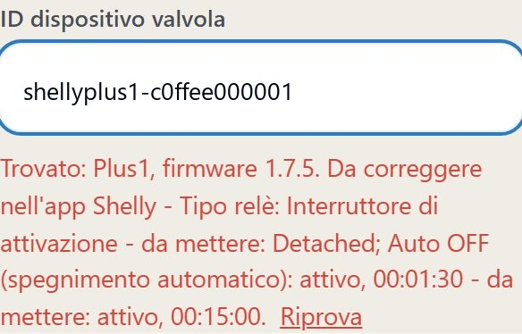
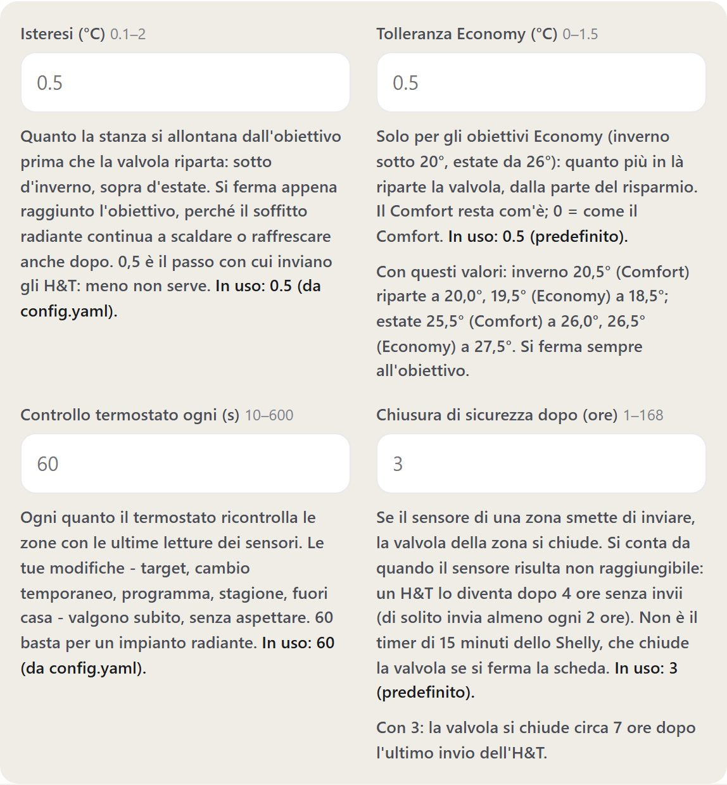
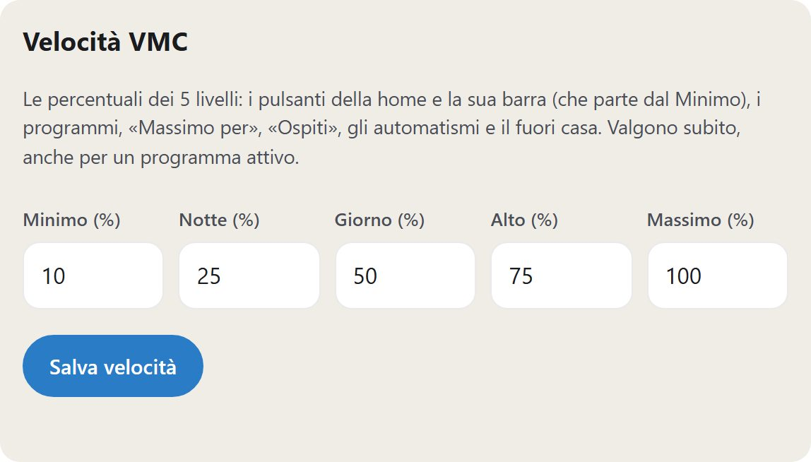
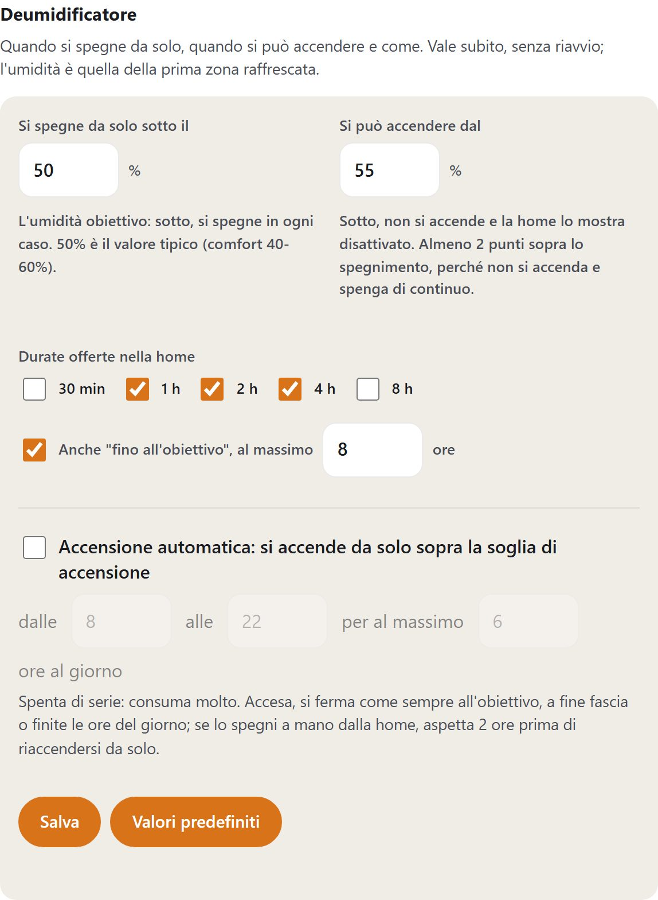

Guida per l'amministratore dell'impianto
Come funzionano il software e l'impianto, come si collegano gli Shelly, cosa fa quando manca qualcosa. Il software lo forniamo noi.
Come funziona
1. L'impianto
La scheda (Arduino UNO Q) fa girare LocalHome e il broker MQTT: gli Shelly parlano con lei sulla rete di casa, senza cloud. Internet serve solo per l'ora esatta (sezione 7).
| Cosa | Dispositivo |
|---|---|
| Sensore Stanze, Bagni, esterno | Shelly H&T Gen3, a batteria (sezione 5) |
| Valvola Stanze, Bagni | Shelly 1 Gen3 |
| Bypass bagni, deumidificatore | Shelly 1 Gen3 (sezione 3) |
| VMC Maico AERA 320 | Shelly Dimmer 0/1-10V Gen3 (sezione 4) |
| Pagina | Per chi, cosa |
|---|---|
Home http://<scheda>.local:5000 | Chi abita: temperature, programmazione, fuori casa, VMC, deumidificatore. Un badge in alto dice se c'è qualcosa da controllare. |
Admin …/climate-admin | Chi gestisce: Impianto (stagione, zone, regolazioni), Dispositivi, Scheda (stato sistema, impostazioni), Strumenti (diagnosi e manutenzione). In alto i riquadri della panoramica e il link a questa guida. |
2. Termostato e stagioni
- Stagione: una per tutto l'impianto, inverno scalda ed estate raffresca. Si cambia in admin → Stagione, scrivendo il nome della nuova.
- Programmazione: ogni zona ha un obiettivo per ogni ora della settimana, uno per stagione. Si disegna dalla home (Modifica). Un'ora senza obiettivo (✕) tiene la valvola chiusa.
- Valvola: aperta finché la stanza non arriva all'obiettivo, poi ferma (il soffitto radiante continua a lavorare). Riparte quando la stanza se ne allontana dell'isteresi, 0,5 °C: sotto d'inverno, sopra d'estate.
- Comfort ed Economy: un obiettivo Economy (inverno sotto 20°, estate da 26°) riparte ancora 0,5 °C più in là. Pause più lunghe, meno consumo. Esempi nella sezione 20.
- Senza temperatura la valvola resta chiusa: sensore mai sentito, non ancora collegato o fermo (sezione 6).
- Dalla home: una temperatura o "spenta" per 2, 4, 8 o 24 ore, fino al prossimo cambio della settimana o finché non la si cambia. Poi torna la programmazione.
- Fuori casa (1 giorno, 3 giorni, 1 settimana o fino a un giorno e un'ora): zone e deumidificatore spenti, e niente si cambia fino a Sono rientrato. La settimana resta com'è e riparte da sola al rientro.
- Il termostato ricontrolla le zone ogni 60 secondi e legge lo stato vero dei relè: una valvola aperta o chiusa da altri (per esempio dall'app Shelly) viene rimessa a posto al ciclo dopo. Una modifica dalla home vale subito.
3. Bagni, bypass e deumidificatore
| Inverno | Estate | |
|---|---|---|
| Valvola Stanze | per temperatura | per temperatura |
| Valvola Bagni | per temperatura | aperta solo col deumidificatore acceso: i pannelli del bagno farebbero condensa |
| Bypass bagni (normalmente aperto) | aperto: Shelly spento | chiuso: Shelly acceso, tutta la stagione, anche fuori casa |
| Deumidificatore | spento | dalla home, a tempo; in automatico se attivato |
- Al cambio di stagione tutto questo vale subito, e viene ricontrollato a ogni ciclo. Se qualcuno cambia il bypass o accende il deumidificatore dall'app, entro un minuto torna com'era.
- Il bypass è normalmente aperto: home e admin lo dicono aperto o chiuso, non acceso o spento.
- Il deumidificatore usa l'acqua fredda della valvola Bagni. Si spegne sotto il 50% di umidità (di Stanze), si può accendere dal 55%, al massimo 8 ore. Fuori casa si spegne. Soglie in admin → Stagione → Deumidificatore (sezione 20).
- Da quale zona prende l'acqua, e se il bypass è normalmente aperto: admin → Dispositivi → Interruttori extra. Impostazioni degli Shelly: sezione 18.
4. VMC
- Dalla home: Spenta, Notte, Giorno o Massimo; oppure Massimo per 30 minuti, 1 o 2 ore, poi torna com'era. Scegliere una velocità riaccende la VMC se era spenta.
- Programma (sulla scheda della VMC, nella home): Manuale, Giorno e notte (giorno 7–22), Fuori per lavoro, Mattina e sera intense, Personalizzato. Un programma cambia velocità solo quando inizia la sua fascia successiva: una velocità scelta a mano resta fino ad allora.
- Percentuali di Notte, Giorno e Massimo (di serie 25, 50 e 100%): admin → Regolazioni impianto (sezione 20). Valgono subito.
- Automatismi (spenti di serie, sezione 20): doccia, aria fuori più umida e raffrescamento notturno. Cambiano velocità sopra al programma, non accendono mai la VMC spenta, e una velocità scelta a mano li ferma finché il motivo non passa. La scheda della VMC dice quale è in corso e perché.
- Un riavvio della scheda non la tocca: resta alla velocità che aveva. Se non risponde, LocalHome la interroga sempre meno spesso finché non torna.
La VMC: Maico AERA 320
LocalHome ne comanda solo la velocità, con il segnale 0-10 V dello Shelly Dimmer (sezione 19). Il resto lo fa la VMC da sola, con i suoi sensori: LocalHome non lo comanda e non lo vede.
| Funzione della VMC | Cosa fa |
|---|---|
| Bypass estivo (free cooling) | Una serranda manda l'aria attorno allo scambiatore, senza recuperare calore. Si apre da sola con dentro più di 22 °C, dentro più caldo che fuori e fuori più di 16 °C (l'aria fresca della notte raffresca), oppure con dentro meno di 22 °C e fuori più caldo (l'aria tiepida scalda). |
| Antigelo | Con l'esterno troppo freddo protegge lo scambiatore: può girare un solo ventilatore. Non è un guasto, né di LocalHome: torna da sola quando fuori si scalda. |
| Manutenzione | Filtri della VMC e delle bocchette almeno ogni 3 mesi, scambiatore ogni anno (sostituzione ogni 6), tubazioni ogni 3 anni. Acqua tiepida e sapone neutro, niente getti in pressione. |
Per questo il raffrescamento notturno (sezione 20) alza la velocità solo con fuori almeno 16 °C: è lì che il bypass è aperto e l'aria fresca entra davvero. Sotto, passerebbe dallo scambiatore e si scalderebbe con l'aria che esce.
5. Sensori: Shelly H&T Gen3
Stesso sensore per Stanze, Bagni ed esterno: temperatura e umidità, display e-paper, 4 pile AA (circa un anno) o USB-C, 70 × 70 mm. Scheda e foto Shelly.
Dorme quasi sempre. A batteria invia subito quando temperatura o umidità cambiano oltre le soglie, e ogni 2 ore comunque (misurato: puntuale al minuto). Ogni invio porta il valore esatto, al decimo: le soglie decidono solo quando parla. In casa stabile parla quasi solo ogni 2 ore: "aggiornato 1 h 50 min fa" è normale. LocalHome riconosce da solo come è alimentato.
| A batteria | Alimentato (USB-C) | |
|---|---|---|
| Quando invia | a ogni variazione oltre le soglie, e ogni 2 ore | la temperatura ogni 12 minuti circa |
| "Aggiornato … fa" normale | fino a 2 ore | fino a 12 minuti circa |
| In ritardo | dopo 4 ore senza invii | dopo 30 minuti |
| Batteria | avviso in home al 20% e al 10%; in admin Batteria scarica al 10% | non conta (senza pile risulta 0%: normale) |
| Se perde l'alimentazione | - | con le pile dentro passa a batteria; senza, si spegne |
| Nell'app Shelly | Valore |
|---|---|
| MQTT | come la sezione 13 |
| Soglia temperatura | 0,5 °C (già di serie) |
| Soglia umidità | 1% (di serie è 5%: da cambiare) |
Con il 5%, un cambio di umidità più piccolo arriva solo al battito delle 2 ore: il deumidificatore, che si ferma sotto il 50%, può restare acceso fino a 2 ore di troppo. Soglie più strette consumano più batteria, soprattutto con Wi-Fi debole.
- Cambiare le pile basta: niente da azzerare in LocalHome.
- Segnale Wi-Fi debole: non è un problema finché gli invii arrivano, ma consuma più batteria. Avvicinarlo al router o aggiungere un ripetitore.
- Valori impossibili (fuori da -30…70 °C o 1…100%) vengono scartati e segnalati: per il termostato è come se il sensore non ci fosse.
6. Sicurezze
Il comando a tempo
LocalHome non dice "accendi" ma "accendi per 15 minuti", ripetuto ogni 5 minuti. Se la scheda si ferma, lo Shelly chiude la valvola da solo entro 15 minuti. Vale per valvole di zona e deumidificatore; il bypass bagni no (sezione 18).
| Cosa succede | Risultato |
|---|---|
| Scheda o LocalHome fermi meno di 15 min | Niente: al riavvio il comando viene rinnovato. |
| Scheda ferma più di 15 min | Lo Shelly chiude; al ritorno LocalHome riapre se serve. Avviso in Successo nelle ultime 72 ore. |
| Shelly senza corrente | Valvola chiusa; al ritorno LocalHome riapre se serve. Un riavvio inatteso in Dispositivi. |
| Blackout di tutta la casa | Lo Shelly riparte spento, poi decide LocalHome. |
| Sensore che smette di inviare | Dopo 4 ore il suo dato non vale più: la valvola resta com'è. Dopo altre 3 ore (Chiusura di sicurezza) si chiude. Al primo invio si riparte da soli. |
| Un dispositivo che manca | Non blocca mai il resto: segnalato in admin e nella home, nessun comando a vuoto. |
Per aprire comunque una valvola col sensore fermo (per esempio mentre si cambiano le pile): modalità diagnosi (sezione 10). Provato sulla scheda di produzione con Plus 1 (4/10) e 1 Gen3 (5/10).
7. Riavvio e black-out
| Cosa | Misurato sulla scheda di produzione (9/10) |
|---|---|
| Riavvio di LocalHome (pulsante in alto nell'admin) | risponde dopo circa 5 secondi |
| Riavvio della scheda | dall'accensione: LocalHome risponde dopo circa 20 secondi, gli Shelly a corrente si ricollegano dopo circa 40, l'ora si corregge da internet entro un minuto |
| Cosa resta | stagione, programmazione, fuori casa con la sua scadenza, regolazioni, impianto; l'ultimo dato di ogni sensore con la sua età vera, usato finché ha meno di 4 ore |
| Durante il riavvio | nessuna valvola si apre; la VMC resta com'era |
- L'ora: la scheda non ha una batteria per l'orologio. Riparte dall'ora in cui si è spenta e si corregge da internet. Finché non è corretta lo storico è in pausa e la home avvisa. Dopo un black-out lungo, senza internet, la programmazione segue un'ora sbagliata fino al ritorno di internet.
- In admin → Stato sistema → Ultimi avvii della scheda: "spenta regolarmente" o "interrotto" (corrente mancata o blocco).
8. Wi-Fi e router
- La scheda resta sempre sul Wi-Fi (risparmio energetico spento). Un controllo ogni minuto verifica che il router risponda; se no, ricollega il Wi-Fi (dopo 3 minuti), riavvia la rete (10), riprova (20) e alla fine riavvia la scheda (30, al massimo ogni 6 ore). Tutto finisce nello Storico watchdog, in Stato sistema.
- Pagine e Shelly usano il nome della scheda (
nome.local), non l'indirizzo: se il router cambia gli indirizzi non cambia niente. - Successo sulla scheda di casa: il router rispondeva alla scheda ma non le passava più le connessioni
degli Shelly. La home dice "I dispositivi non raggiungono la scheda" (
RTsulla matrice LED): riavviare il router. - Per evitarlo: 5 GHz su un canale fisso tra 36 e 48 (i canali 52–144 il router li può cambiare da solo), scheda e Shelly sulla rete principale e mai su quella ospiti, se possibile un indirizzo fisso per la scheda.
- La pagina non si apre ma la matrice LED disegna: la scheda sta bene, è la rete.
9. Dati, storico e manutenzione
- Storico dei grafici: limite di giorni e di dimensione in admin → Impostazioni (di serie 30 giorni e 300 MB), mai più di un decimo del disco. Oltre, si cancellano i dati più vecchi; se il disco si riempie, lo storico smette di crescere.
- Consumi: una riga al giorno con kWh e picco, per sempre.
- Registri di sistema: in memoria (al massimo 30 MB), non consumano la memoria della scheda e si perdono al riavvio.
Admin → Strumenti → Diagnosi e manutenzione:
| Azione | Cosa fa |
|---|---|
| Scarica backup | Zone, dispositivi, programmazioni e config.yaml in un .zip. Senza password e chiavi: restano solo sulla scheda. |
| Cancella storico | Grafici e statistiche. Programmazioni e dispositivi restano. |
| Cancella programmazioni | Le settimane di inverno ed estate di tutte le zone; annulla fuori casa e diagnosi. Valvole chiuse finché non se ne disegna una nuova. |
| Reset di fabbrica | Come una scheda nuova (sezione 15), poi riavvia LocalHome. Restano config.yaml, le credenziali e il broker. |
Ogni cancellazione chiede di scrivere RESET e salva prima un backup sulla scheda (config/backups,
gli ultimi 10).
10. Diagnosi e sensori di prova
Modalità diagnosi (admin → Diagnosi e manutenzione): termostato e sicurezze si fermano, ogni valvola, il bypass e il deumidificatore si muovono solo col loro pulsante. Un avviso resta in cima all'admin finché è attiva. Spegnendola tutto riprende subito, senza riavvio, e ogni valvola torna dove deve. Serve per:
- sentire il clic di un relè e capire quale valvola è quale (sezione 17);
- aprire una valvola col sensore fermo, per esempio mentre si cambiano le pile.
Sensori di prova: in admin → Zone il sensore di una zona può essere Simulato (si comporta come un H&T vero; la stanza si scalda o si raffresca con la sua valvola) o Manuale (vale la temperatura scritta nella home o in admin, la valvola reagisce subito). Per provare l'impianto senza sensori. Si torna a Shelly dall'admin, con un riavvio.
Prova completa, prima di collegare le valvole: lo script tools/live_walk.py usa la home come chi
abita (stagioni, modifiche, fuori casa, diagnosi, riavvii) e controlla cosa fanno davvero i relè. Rimette tutto com'era.
Installazione
11. Collegamento
| Morsetto | Cosa ci va |
|---|---|
| N / L | Neutro e fase dell'impianto. |
| I | Ponte da L (il relè è un contatto pulito, fino a 16 A). |
| O | Fase della valvola (più valvole: in parallelo). |
| Neutro valvola | Al neutro dell'impianto, non allo Shelly. |
| SW | Libero. |
12. App Shelly: prima accensione
- Aggiungilo sulla rete Wi-Fi principale e dagli un nome (Valvola Stanze…).
- Aggiorna il firmware (Gen3: almeno 2.0.1).
- Annota l'ID (Informazioni dispositivo), es.
shelly1g3-c0ffee000004.
13. App Shelly: MQTT
| Impostazioni → MQTT | Valore |
|---|---|
| Abilita MQTT | attivo |
| Server | <nome-scheda>.local:1883 (es. antonio.local:1883) |
| Prefisso | quello proposto o uno tuo (es. shelly1g3-stanze): in LocalHome scrivi il
prefisso se l'hai cambiato (sezione 21) |
| Generic status update / RPC over MQTT | attivi |
| SSL, utente, password | spenti / vuoti |
14. App Shelly: ingresso/uscita e timer


| Impostazione | Scegli |
|---|---|
| Tipo relè | "Detached" |
| Stato all'accensione | "…per spegnersi quando è alimentato" |
| Accensione automatica | spenta |
| Spegnimento automatico | attivo, 00:15:00 |
| Pulsante o interruttore | indifferente (SW è libero) |
15. In LocalHome
Su una scheda nuova (o dopo Reset di fabbrica) ci sono già Stanze, Bagni e tutti gli Shelly, Da configurare. Non è un guasto: non vengono comandati e una zona senza sensore tiene la valvola chiusa.

- Admin → Zone (bypass, deumidificatore, sonda esterna, VMC: Dispositivi → Da collegare qui): incolla l'ID o il prefisso. Uno alla volta va bene.
- Esci dal campo: LocalHome interroga lo Shelly e dice cosa correggere (un H&T a batteria dorme e non risponde: è normale).
- Correggi nell'app e premi Riprova fino a Impostazioni a posto ✓.
- Salva e riavvia LocalHome dal pulsante in alto.

Il controllo continua. Quando cambi un'impostazione nell'app, lo Shelly lo annuncia e LocalHome la rilegge in pochi secondi: la riga in Dispositivi si aggiorna da sola. Se un'impostazione cambia per altro (aggiornamento, reset), la riga diventa Impostazioni da correggere e dice cosa correggere.
16. Stato dei dispositivi
Admin → Dispositivi: tutti i dispositivi, raggruppati per zona. Tocca la riga di uno Shelly per il dettaglio.
| Stato | Significato |
|---|---|
| OK | Funziona. Nel dettaglio, in grigio, le note che non sono guasti: corrente mancata, riavvii voluti, segnale debole. |
| Batteria scarica | C'è qualcosa da fare: l'etichetta dice cosa, il riquadro arancione nel dettaglio dice come. |
| Non risponde | Niente da LocalHome: corrente, Wi-Fi o MQTT (o un nome sbagliato, sezione 21). |
| Da configurare | Il suo ID non è ancora stato inserito (sezione 15). |


Shelly a corrente (valvole, deumidificatore, bypass, VMC)
Segnale e temperatura ogni 5 minuti (lo Shelly non li manda da solo). Subito quando tornano online o quando cambi un'impostazione nell'app.
| Riga | In rosso quando |
|---|---|
| Collegamento | scollegato o non risponde |
| Segnale Wi-Fi, 24 ore, 7 giorni | mai da solo (ottimo > -65, buono > -75, debole > -85 dBm) |
| Temperatura interna | da 80 °C (si spegne da solo verso i 90 °C) |
| Riavvii, 7 giorni | divisi per causa. Solo un blocco (firmware) o un calo di tensione; senza corrente e voluti sono solo informazioni |
| Accensioni del relè 24 ore (Gen3) | oltre 48: aperture troppo brevi, relè che si consuma. Sono le ultime 24 ore: l'avviso sparisce da solo quando le accensioni di troppo hanno più di un giorno |
| Relè acceso oggi (Gen3) | - |
| Firmware | se chiede un riavvio |
| Impostazioni | sempre: com'è e cosa mettere |
Sensori a batteria (H&T Gen3)
| Riga | In rosso quando |
|---|---|
| Ultimo invio | oltre 4 ore a batteria, oltre 30 minuti alimentato |
| Batteria | quasi scarica (non mostrata su USB-C) |
| Invii ultime 24 ore | 3 o più persi (avviso in Stato sistema) |
| Prossimo invio, invii persi 7 giorni | - |
Come funzionano: sezione 5.
Stato sistema e problemi
- Problemi: spariscono da soli quando la causa sparisce. La home li mostra nel badge in alto.
- "I dispositivi non raggiungono la scheda" (
RTsulla matrice LED): nessuno Shelly risponde, è la rete (sezione 8). - Successo nelle ultime 72 ore: es. è scattato il timer di sicurezza di uno Shelly.
17. Prova
- Admin → Diagnosi e manutenzione → Modalità diagnosi attiva.
- Apri e chiudi la valvola: clic del relè.
- Togli la modalità diagnosi.
18. Deumidificatore e bypass: impostazioni
Deumidificatore: come una valvola di zona, impostazioni della sezione 14 comprese (fase del
deumidificatore su O, fino a 16 A). Come lavora: sezione 3.
Bypass bagni: impostazioni diverse
Valvola normalmente aperta, comandata dalla stagione e non dalla temperatura (sezione 3). Deve restare com'è anche se la scheda o lo Shelly si fermano. Collegamento e MQTT come le valvole (sezioni 11 e 13), ma nell'app:
| Impostazione | Scegli |
|---|---|
| Tipo relè | "Detached" |
| Stato all'accensione | "…per ripristinare l'ultima modalità" |
| Accensione automatica | spenta |
| Spegnimento automatico | spento (non 15 minuti) |
In LocalHome: Dispositivi → Da collegare qui → Interruttori extra, campo ID dispositivo valvola bypass bagni, e Valvola normalmente aperta spuntata (lo Shelly acceso la chiude). Il controllo delle impostazioni è lo stesso della sezione 15, con queste come giuste.
19. Dimmer Gen3 (VMC)
MQTT come nella sezione 13, poi ID o prefisso in admin → Dispositivi → VMC. Come lavora: sezione 4.
Sulla Maico AERA 320 il segnale va all'ingresso 1-10 V / 0-10 V (schema 3 del manuale): jumper in posizione 1-10V, trimmer MIN al minimo e MAX al massimo, così tutta la scala segue il segnale e le percentuali di Notte, Giorno e Massimo (sezione 20) sono quelle vere.
20. Regolazioni nell'admin
Quelle che vale la pena conoscere. Le altre vanno bene di serie.
Termostato: admin → Regolazioni impianto
| Impostazione | Di serie e cosa fa |
|---|---|
| Isteresi | 0,5 °C. La valvola si ferma all'obiettivo e riparte quando la stanza se ne allontana di tanto (sotto d'inverno, sopra d'estate). 0,5 è il passo degli H&T: meno non serve. |
| Tolleranza Economy | 0,5 °C. Per gli obiettivi Economy (inverno sotto 20°, estate da 26°) riparte ancora più in là: risparmio. 0 = come il Comfort. |
| Chiusura di sicurezza | 3 ore, dopo le 4 senza invii: la valvola del sensore muto si chiude (sezione 6). |
| Controllo termostato | 60 s. Le modifiche dalla home valgono comunque subito. |
Esempio con i valori di serie: d'inverno a 20,5° (Comfort) riparte a 20,0°, a 19,5° (Economy) a 18,5°. Si salvano con Salva impostazioni e valgono dopo il riavvio.

VMC: admin → Regolazioni impianto → Velocità VMC
Notte, Giorno e Massimo in percentuale: le velocità dei pulsanti e dei programmi della home. Valgono subito. Il programma giorno/notte si sceglie dalla home, sulla scheda della VMC.

Automatismi VMC: admin → Regolazioni impianto → Automatismi VMC
Tutti spenti di serie: si attivano uno per uno, i valori consigliati sono già pronti. Valgono subito.
| Automatismo | Quando | Velocità |
|---|---|---|
| Doccia | l'umidità del bagno sale di 8 punti in 10 minuti; finisce tornata entro 5 punti da prima, dopo 15-60 minuti | Massimo; Giorno nelle ore silenziose (22-7) |
| Aria fuori più umida (estate) | il punto di rugiada fuori supera di 1 °C quello di Stanze | Notte, mai spenta |
| Raffrescamento notturno (estate) | Stanze da 24 °C, fuori almeno 3 °C più fresco, non sotto 16 °C e non più umido | Giorno, mai Massimo |
Conta la salita dell'umidità, non un valore fisso: d'estate il bagno è umido anche senza doccia. I 16 °C sono quelli del bypass estivo della VMC (sezione 4): sotto, l'aria passa dallo scambiatore e non raffresca. Le due estive vogliono la sonda esterna. I valori della doccia sono pensati per la soglia umidità dell'H&T all'1% (sezione 5): un invio a ogni punto, la salita si vede entro un paio di minuti.
Deumidificatore: admin → Stagione → Deumidificatore
| Impostazione | Di serie |
|---|---|
| Si spegne sotto | 50% di umidità (di Stanze) |
| Si può accendere dal | 55% |
| Durate nella home | 1, 2, 4 ore e "fino all'obiettivo" (al massimo 8 ore) |
| Accensione automatica | spenta: consuma molto |
Valgono subito.

21. Rinominare uno Shelly
LocalHome riconosce ogni Shelly dal prefisso MQTT. Se lo cambi nell'app (Impostazioni → MQTT → Prefisso), metti lo stesso nome in admin, salva e riavvia; un H&T lo prende al risveglio: premi il pulsante.
shellyhtg3-stanze in admin e shellyhtg3-tstanze
nell'app non arriva niente.Quando qualcosa non va
22. Quando manca qualcosa
| Situazione | Cosa fa LocalHome |
|---|---|
| Sensore mai sentito (nuovo o rinominato) | Valvola chiusa. Premi il pulsante del sensore. |
| Sensore che smette di inviare a valvola aperta | La lascia aperta; dopo 4 ore Non risponde, dopo altre 3 la chiude. Si abbassa in admin → Regolazioni impianto → Chiusura di sicurezza (minimo 1 ora). |
| Shelly che non risponde | Nessun comando a vuoto; al ritorno lo rimette nello stato giusto. |
| Scheda ferma | Valvole e deumidificatore chiusi entro 15 minuti; bypass com'è. |
| Scheda riavviata o black-out | Riparte da sola com'era (sezione 7). |
| Nessuno Shelly risponde | È la rete: riavvia il router (sezione 8). |
| Bypass | Estate chiuso, inverno aperto: sempre, anche fuori casa. |
| Deumidificatore | Solo d'estate, acceso dalla home a tempo. Acceso da altri: spento entro un minuto. |
| Fuori casa | Zone e deumidificatore spenti; niente si cambia fino a Sono rientrato. |
23. Quanto ci mette ad accorgersene
| Cosa succede | In admin dopo |
|---|---|
| Shelly a corrente collegato | pochi secondi |
| Shelly a corrente staccato | 1–2 minuti |
| Impostazione cambiata nell'app | pochi secondi |
| H&T che smette di inviare | 4 ore |
La home al più tardi un minuto dopo. Misurato sulla scheda di produzione, 8–9 ottobre 2026.